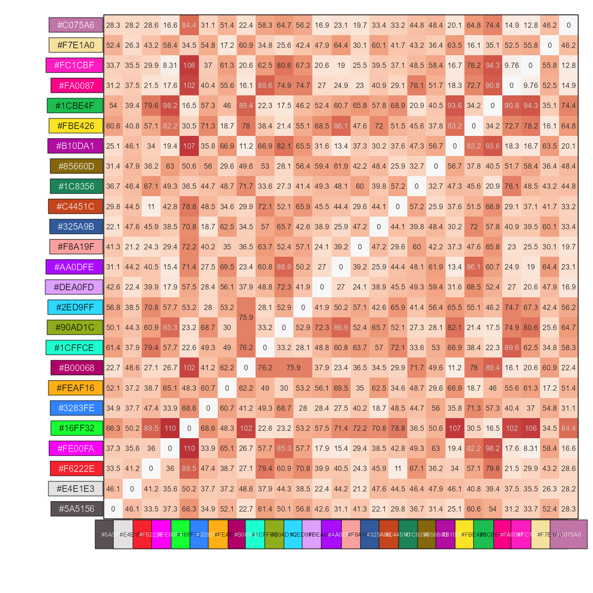
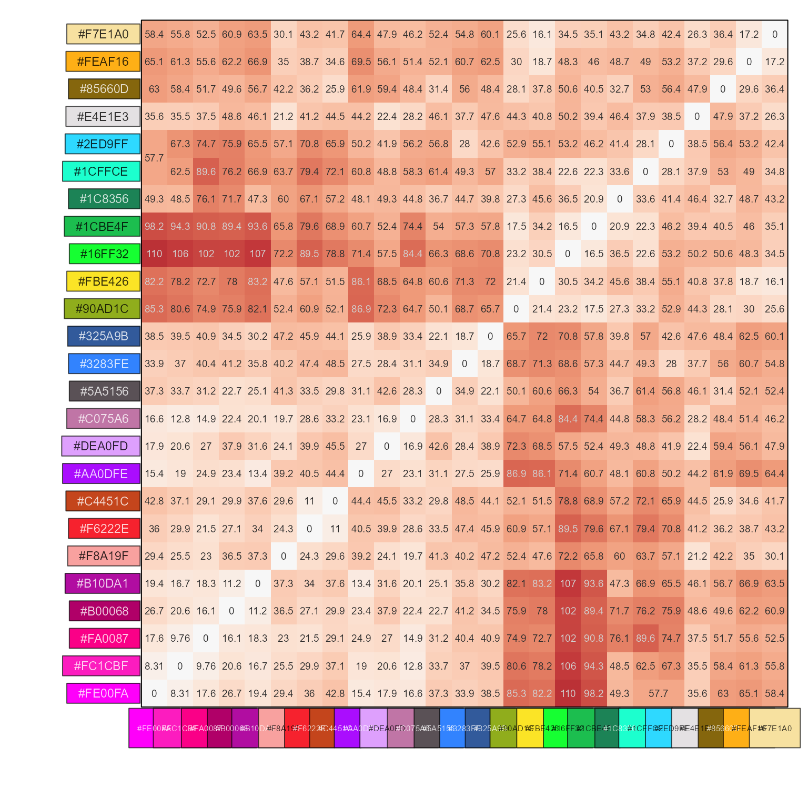
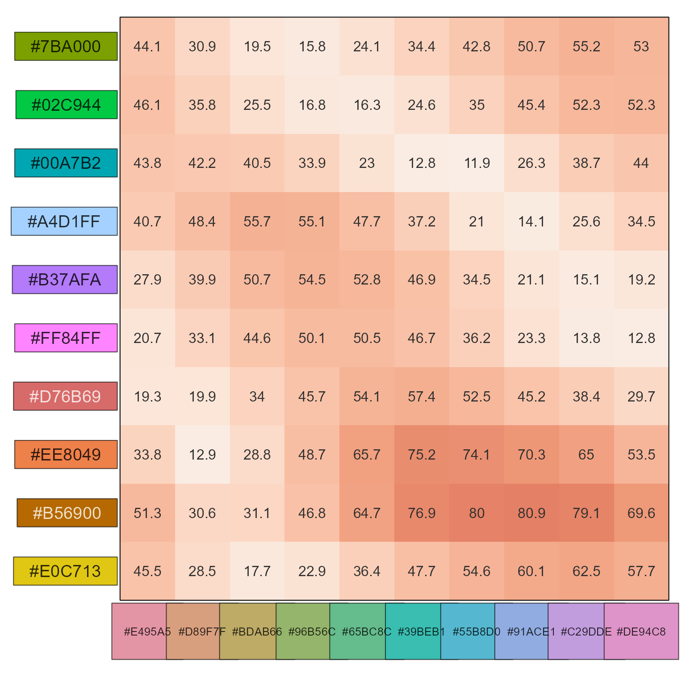
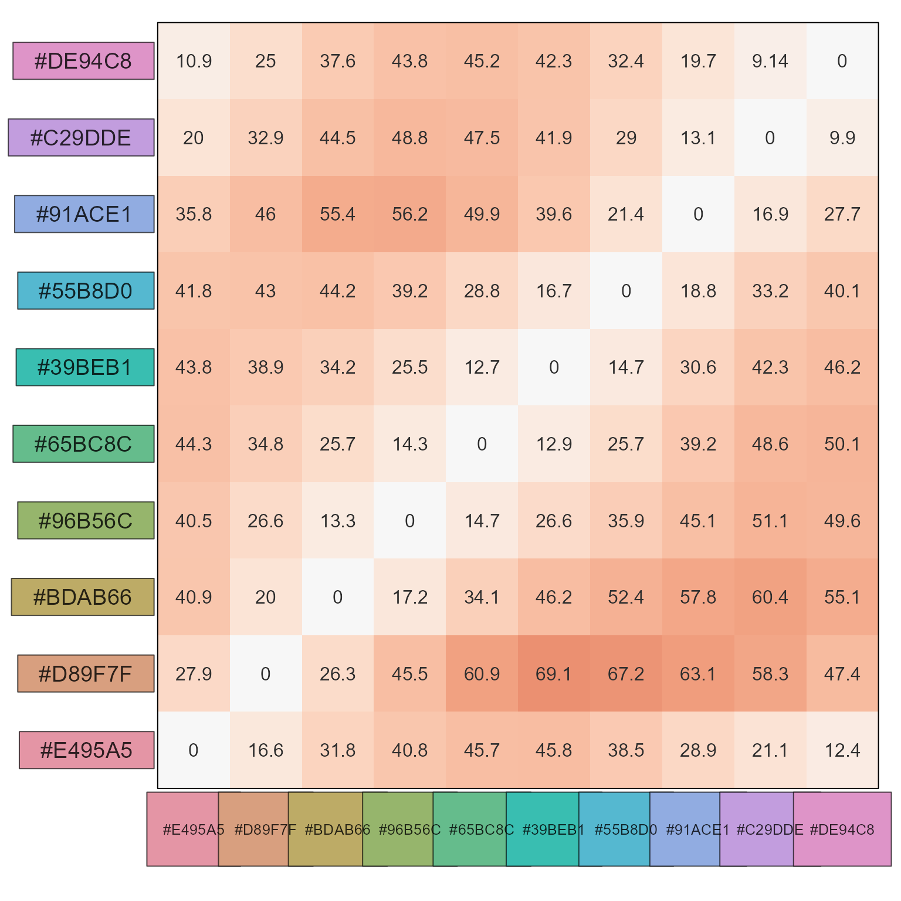
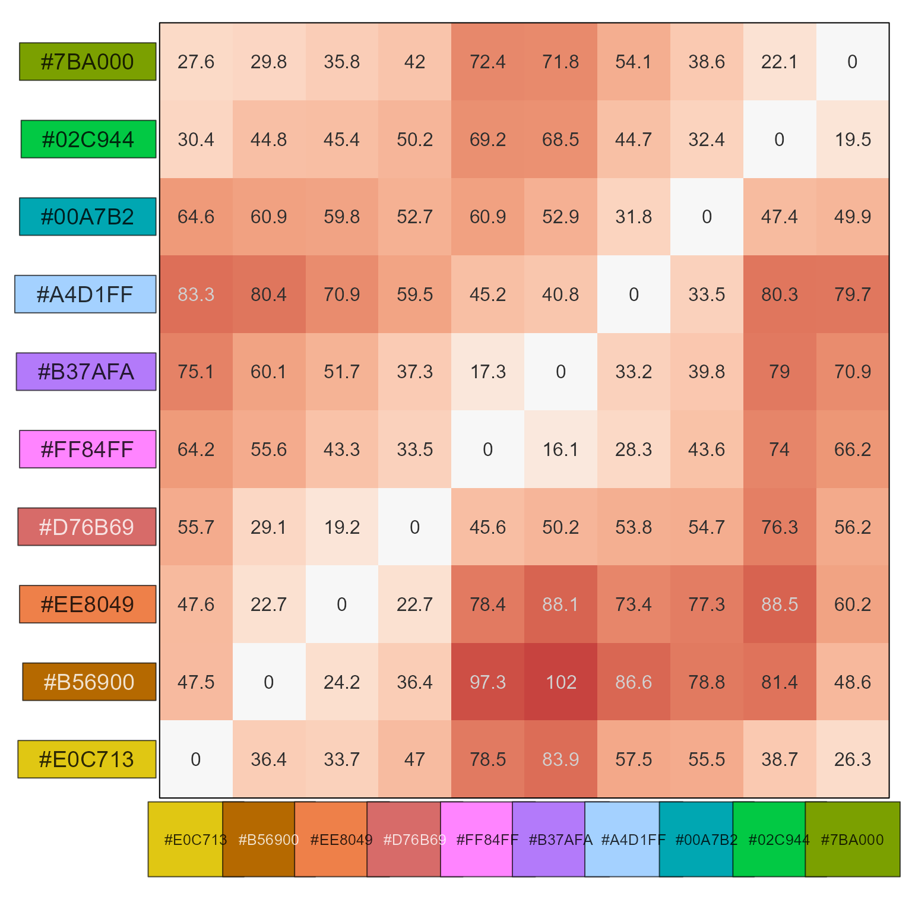

Show color distance as a heatmap
Usage
show_color_distance(
cd = NULL,
pc = NULL,
show_labels = TRUE,
cluster_data = FALSE,
row_split = 0,
...
)Arguments
- cd
numericmatrix, default NULL, with pre-calculated values.- pc
charactervector of colors used incd, useful when there arenames(pc)to use as heatmap column or row labels. When onlypcis provided and notcd, thecdis calculated by callingcolor_distance(pc).- show_labels
logicaldefault TRUE, used whenpcis provided.- cluster_data
logicaldefault FALSE, whether to enable row and column hierarchical clustering in the heatmap.- row_split
numericdefault 0, used whencluster_data=TRUEto subdivide the dendrogram into this many separate subclusters.- ...
additional arguments are passed to
color_distance(), then tojamses::heatmap_se(). Many arguments injamses::heatmap_se()are also passed through toComplexHeatmap::Heatmap().
Value
list with two elements, suitable to use with
jamba::imageByColors().
cd: the color distance matrixcdc: the heatmap colorized matrix
Details
This function formerly used ComplexHeatmap::Heatmap(), now uses
jamba::imageByColors() to remove the dependency on another
R package.
It creates a matrix visual summary of color distances, and displays the actual colors as row and column annotations outside the color distance heatmap.
See also
Other colorjam internal:
color_distance(),
find_color_spread(),
jam_pal(),
rainbowJam_v1(),
slot_colors(),
vals2colorLevels()
Examples
pc <- grDevices::palette.colors(25, palette="Polychrome 36");
cd <- color_distance(pc, method="cie2000");
show_color_distance(cd, pc)

# with clustering
show_color_distance(cd, pc, cluster_data=TRUE)

# compare two color vectors
pc1 <- rainbowJam(10, preset="ryb2")
pc2 <- colorspace::rainbow_hcl(10)
cd <- color_distance(pc1, pc2)
show_color_distance(cd, cluster_data=FALSE)

# evaluate the small step size between HCL rainbow colors
show_color_distance(pc2)

# evaluate the larger step sizes between colorjam rainbow colors
show_color_distance(pc1, cluster_data=FALSE)
